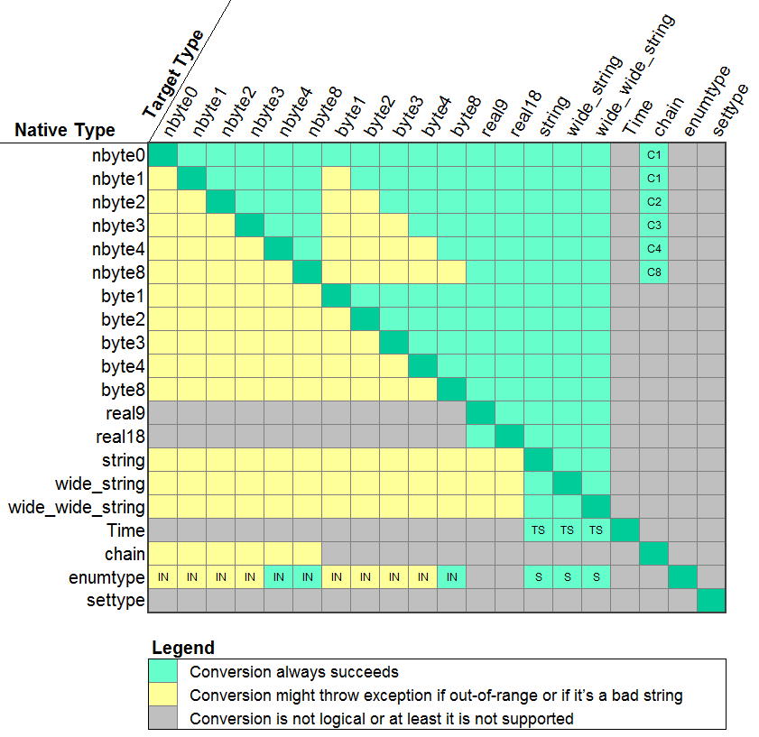

Type AdaBase.Results.std_field
The std_field object holds the result in its format type, and also allows conversions to other types. There are currently 20 data types, and the result often can be retrieved as multiple types. The "is_null" function will indicate if the value is marked as "null" in the database and the "native_type" function will return a value from the enumerated type "field_types" to confirm how the native type was initially converted.
package AdaBase.Results.Field is
type std_field is tagged private;
function as_nbyte0 (field : std_field) return nbyte0;
function as_nbyte1 (field : std_field) return nbyte1;
function as_nbyte2 (field : std_field) return nbyte2;
function as_nbyte3 (field : std_field) return nbyte3;
function as_nbyte4 (field : std_field) return nbyte4;
function as_nbyte8 (field : std_field) return nbyte8;
function as_byte1 (field : std_field) return byte1;
function as_byte2 (field : std_field) return byte2;
function as_byte3 (field : std_field) return byte3;
function as_byte4 (field : std_field) return byte4;
function as_byte8 (field : std_field) return byte8;
function as_real9 (field : std_field) return real9;
function as_real18 (field : std_field) return real18;
function as_string (field : std_field) return String;
function as_wstring (field : std_field) return Wide_String;
function as_wwstring (field : std_field) return Wide_Wide_String;
function as_time (field : std_field) return AC.Time;
function as_chain (field : std_field) return chain;
function as_enumtype (field : std_field) return enumtype;
function as_settype (field : std_field) return settype;
function is_null (field : std_field) return Boolean;
function native_type (field : std_field) return field_types;
end AdaBase.Results.Field;
Convertibility
The matrix below shows the possibilities for converting the native type into a different type. The gray blocks indicate conversion is not logical or at least implemented, the green blocks indicate that the conversion is guaranteed to succeed, and the yellow blocks indicate conversion can succeed, but it can also raise an exception. The most common reason for a conversion failure is attempting an illegal range (e.g. converting a negative number into a natural integer) or trying to convert a non-numerical string into a number.

If an enumerated type is requested as a string, only the string component will be returned. If it's requested as a number, the index will be returned. The Time type can only be converted to a string, and this has the form of the ISO 8601 format (no timezone information). Similarly, the natural types can be converted into a array of bytes (aka "chain") up to 8 bytes.
Type AdaBase.Results.Sets.DataRow
Type AdaBase.Results.Sets.DataRowSet
The DataRow object holds a row of a return query. The DataRowSet object hold an array of DataRows. The columns of the row can be referenced by index (starting from 1) or by the header of the column.
package AdaBase.Results.Sets is package ARF renames AdaBase.Results.Field; type DataRow is tagged limited private; type DataRowSet is array (Positive range <>) of DataRow; function column (row : DataRow; index : Positive) return ARF.std_field; function column (row : DataRow; heading : String) return ARF.std_field; function count (row : DataRow) return Natural; end AdaBase.Results.Sets;
The count properly returns the total number of columns in the DataRow. Here are some simple examples:
myString := row.column (2).as_string;
myWord := row.column ("students").as_nbyte1;
myBoolean := row.column (0).as_nbyte0;
myDouble := row.column ("test_average").as_real18;
myInteger := row.column ("weight_change").as_byte2;
The DataRowSet is returned from a statement's fetch_all method, which returns the entire result at once as an array. This object might be used in the following way:
declare
num_rows : constant Natural := rowset'Length;
myWord : nbyte4;
myString : String := rowset (22).column ("student_name").as_string;
begin
myWord := rowset (3).column (3).value;
for n is 1 .. num_rows loop
TIO.Put_Line ("University: " & rowset (n).column ("college").as_string &
" city: " & rowset (n).column(4).as_string);
end loop;
end;